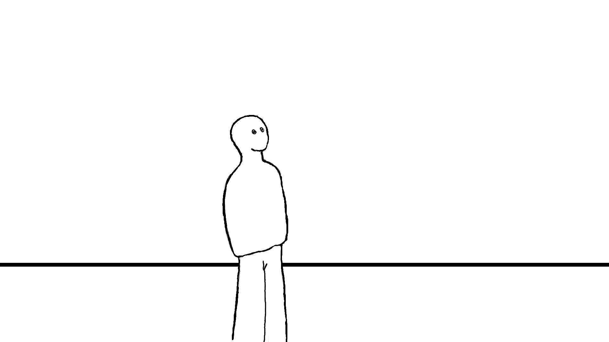
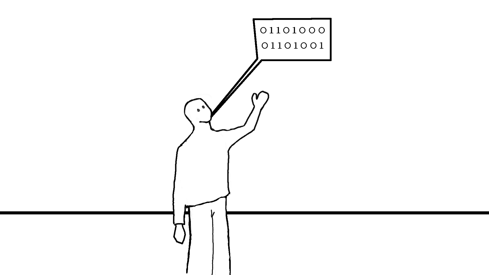

Welcome to the first chapter! Today we'll start by discussing what we're going to learn and what coding is.
Coding can be defined in many ways, however I think the most appropriate definition is: a discipline that
teaches how to solve problems and automate actions with a computer. We'll start by understanding what a computer
is and how it works (with the understanding that your phone is a computer too). A computer is a complex mechanism
made up of many parts that work together to make everything work. Rather than how it's made, we're interested
in its use. Therefore, I asked the great expert I told you about last time to assist us.

Presentation
His name is Lambda and he is a special operator that is part of my computer.
Every computer has its own operator and they work for you without you even knowing it.
Their job is to receive instructions in a certain order and execute them.
Let's thank them all together because they are tireless workers and most
importantly they never make a mistake in doing what they are told to.
All that remains then is to analyze the things we want to do make them a
series of steps and send them to him who will execute them. This does not
sound like a very complex concept but in reality, thanks to this simple thing
man managed to get to the moon!
Let me give you an example. Once I had downloaded on my computer all the photos from my phone,
and I wanted to put them in order under folders. In a single folder, I had about 100 photos and
I had to rename them all as Photo-number of photos. This repetitive and tedious operation is perfect to be automated.
So i created a program that said:
- -mark a number starting with 1
- -take a photo
- -change its name to photo-number marked
- -increase the number by 1
- -repeat for all photos
Convenient, no?
Only one small problem remains. Wait a minute lambda seems distracted.
Hey Lambda!

How do you say lamba? I don't think I understand what you're saying.
Here comes our problem. You see, these operators have their own
language which is called binary language. it is a little strange language
because it is made of only 2 letters namely 0 and 1. Therefore in order to speak to them,
we need to use a dictionary to translate our words into binary.
Does this remind you of anything?
Here's another boring and repetitive task that we could let our collaborator friend do. Thanks to this brilliant idea today we are talking about programming languages and coders do not spend their lives translating words into 0s and 1s.
Behind all this magical world there remains only one word:
COMPILERS
But more about that in the next chapter. Thanks for reading this far and see you next Sunday
FINAL SPAM
if you want to support my work you can
donate something to my:
Ko-Fi
If you want to find out trivia about the IT world I post daily on my:
Instagram page